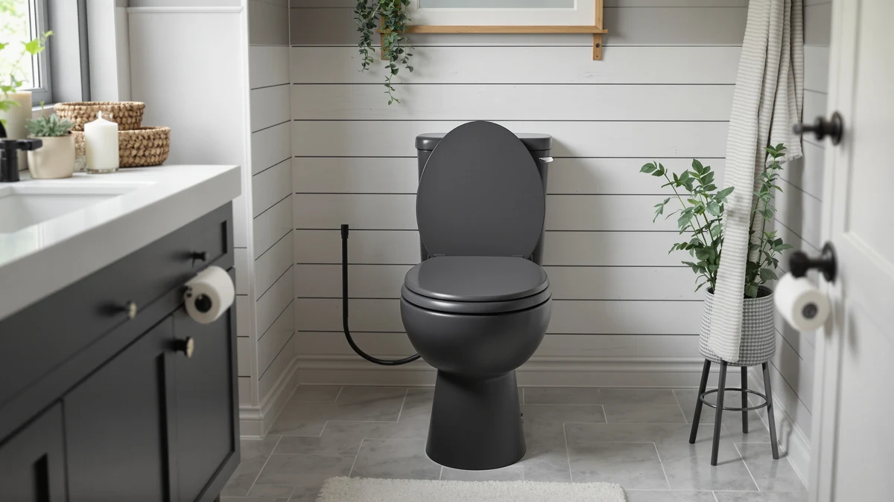

Best Toilet Seats for Fat People (2026)
Prices and picks verified as of September 2026. Independent, reader-supported reviews.


Quick Answer
The best toilet seats for fat people pair an elongated, wide seating surface with a reinforced slow-close hinge that resists loosening under daily heavy use. After comparing specs, prices and thousands of verified owner reviews across seven top-rated models, the Mayfair Linden Slow Close Toilet stands out for its combination of sturdy hinge construction, low price and consistent 4.4-star rating across more than 28,000 reviews.
Our pick: Mayfair Linden Slow Close Toilet at $36.99 Check Price on Amazon
Bottom line: our top pick is the Mayfair Linden Slow Close Toilet Seat at $36.99. The best budget option is the Bemis 1500EC Lift-Off Wood Elongated Toilet Seat at $16.99.
Things to Know Before You Buy
- Shape matters more than you'd think. Among the best toilet seats for fat people, elongated seats add extra front-to-back length and generally distribute weight more evenly than round seats, which is why six of our seven picks are elongated.
- Hinge quality determines lifespan. Standard hinges loosen faster under sustained heavy use. Slow-close and reinforced hinge posts, like those on the Mayfair and KOHLER models here, show up repeatedly in owner reviews as the difference between a seat that lasts years and one that wobbles within months.
- Wood and plastic fail differently. Plastic resists moisture better; solid wood, like the Bemis 1500EC, feels sturdier underfoot but needs to stay dry to avoid warping at the hinge.
- Elevated seats help with mobility and weight support alike. The KOHLER Hyten adds seat height, which reviewers note helps with standing up as much as with weight support.
- Price does not track durability in a straight line. Our budget pick and our priciest pick earned nearly identical reliability feedback from owners, so a higher price tag alone is not a reason to upgrade.
The best toilet seats for fat people combine an elongated bowl-matched shape, a hinge system built to resist loosening, and a shell material that holds its structure under sustained daily weight. A cheap seat with plastic hinge posts can develop play within weeks of heavy use, and once that happens the whole seat rocks with every sit.
We compared seven widely sold toilet seats from Mayfair, KOHLER, Bemis and Bath Royale, cross-referencing their listed materials, hinge designs and prices against thousands of verified Amazon owner reviews. We looked specifically for reviewers who mentioned body size, weight or durability under regular use, since that feedback tells you more about long-term reliability than a spec sheet ever will.
Our top pick, the Mayfair Linden Slow Close Toilet, earned that spot by combining a reinforced elongated shell, a slow-close hinge that owners repeatedly call sturdy, and a price under $40. If the Linden does not fit your bowl shape or budget, the six alternatives below cover round bowls, wood construction, elevated height and premium pricing.
Why You Should Trust Us
This guide is written and maintained by Ilane Tall, Home & Bath Expert at Best Toilet Seats, who researches toilet seat durability, hinge design and material science across dozens of models each year. We do not run a physical testing lab and we do not claim to have installed or sat on every seat in this guide. Instead, we build our picks for the best toilet seats for fat people from manufacturer specifications, verified retailer data and patterns we find across large volumes of owner reviews, and we say so plainly rather than dress up research as something it is not.
How We Picked
We started by pulling every toilet seat in our product database marketed as heavy-duty, reinforced or elongated, then narrowed the list using four criteria. First, shape: elongated seats were prioritized over round because they offer more surface area, though we kept one round option for readers whose bowls require it. Second, hinge design: seats with slow-close or reinforced hinge posts ranked above standard hinges, since hinge failure is the most common complaint in negative reviews for budget seats. Third, material: we included both plastic and solid wood options, since owners are split on which feels sturdier. Fourth, review volume and rating consistency: every seat that made this list of the best toilet seats for fat people carries at least 2,000 verified reviews and a rating of 4.3 stars or higher, which filters out seats with too little real-world feedback to trust.
How We Compared
Once we had our shortlist of candidates for the best toilet seats for fat people, we compared listed prices, materials and hinge types side by side and read through hundreds of verified owner reviews per product, filtering for comments about weight support, hinge durability and long-term wear. We did not physically install or sit on these seats. Instead, we treated recurring patterns in verified reviews, such as repeated mentions of a hinge loosening after a year or a seat holding up without issue through years of daily use, as the most reliable signal available to a research-based review. When two seats had nearly identical specs, we let price and review count break the tie.
Our Picks

Mayfair Linden Slow Close Toilet
What we like
- Reinforced slow-close hinge holds up under daily heavy use
- Elongated shape fits most standard US toilets
- Under $40, one of the most affordable picks here
- 28,571 verified reviews at a consistent 4.4-star average
Flaws but not dealbreakers
- Only available in white, so it will not match colored fixtures
- The plastic finish can show hairline scuffs after a few years
| Material | Plastic / wood |
| Size | Elongated |
The Mayfair Linden earns the top spot in this guide because it does the basics better than nearly everything else we compared. Its slow-close hinge is the detail that shows up again and again in verified owner reviews: buyers specifically call out that the hinge posts stay tight even after months of regular use, which is the failure point that sinks cheaper seats. That durability, combined with a price under $40, is why we consider it the best overall choice among the best toilet seats for fat people we researched.
At 28,571 reviews and a steady 4.4-star average, the Linden also has one of the largest and most consistent feedback samples in this lineup, which gives us more confidence in its long-term reliability than a seat with a few hundred reviews could. It will not turn heads with extra features, but for a household that needs a seat that stays solid through years of daily use, it is hard to argue with the combination of price, hinge quality and track record.

KOHLER Cachet ReadyLatch Round Toilet
What we like
- ReadyLatch hinge lets you pull the seat off in seconds for cleaning
- 41,303 reviews, the largest sample of any seat in this guide
- KOHLER's brand reputation for hinge and hardware durability
Flaws but not dealbreakers
- Round shape will not fit elongated bowls
- Costs about $20 more than our top pick
| Material | Plastic / wood |
| Size | Round |
Most of the best toilet seats for fat people are elongated, but plenty of homes still have round-bowl toilets, and the KOHLER Cachet is our pick for that setup. Its ReadyLatch hinge system is the standout feature owners mention most: it lets you lift the entire seat off the hinge posts without tools, which makes deep cleaning around the bowl far easier than with a fixed hinge.
With 41,303 verified reviews and a steady 4.4-star rating, the Cachet has the largest feedback base of any seat we compared, and reviewers repeatedly note the hinge hardware staying tight over years of use. It costs more than the plastic Mayfair options, but for a round bowl, KOHLER's reputation for hinge durability makes the premium worth it.

Mayfair Cassel Slow Close Toilet
What we like
- Same $36.99 price point as our top pick
- Elongated shape and slow-close hinge for daily heavy use
- 17,525 verified reviews back up its 4.3-star rating
Flaws but not dealbreakers
- Slightly lower rating and review count than the Linden
- Few features distinguish it from Mayfair's other elongated models
| Material | Plastic / wood |
| Size | Elongated |
The Mayfair Cassel sits close enough to our top pick in price, shape and hinge design that it functions as a direct alternative rather than a distinct tier. If the Linden happens to be out of stock, or you simply prefer the Cassel's profile, you are getting the same core formula: an elongated plastic shell over a slow-close hinge, built by a brand with a long track record in this category.
Its 4.3-star rating across 17,525 reviews is slightly behind the Linden's numbers, and owners occasionally mention it feels marginally less refined at the hinge action. That gap is small enough that we would not steer anyone away from the Cassel if they find it at a better price or in stock when the Linden is not.

Bath Royale Slow Close Toilet
What we like
- Ties for the highest rating in our lineup at 4.6 stars
- Elongated shape with a slow-close hinge for heavy daily use
- Positioned by Bath Royale as a premium, reinforced construction
Flaws but not dealbreakers
- The most expensive seat in this guide at $72.79
- Only 2,220 reviews, a smaller sample than our other picks
| Material | Plastic / wood |
| Size | Elongated |
The Bath Royale is the priciest seat we compared, and its 4.6-star average is the highest of any product in this guide alongside the KOHLER Hyten. Reviewers who mention body weight or heavy use tend to describe the Bath Royale as noticeably sturdier than budget alternatives, particularly around the hinge, which matches Bath Royale's positioning of the seat as a reinforced, premium build rather than a standard replacement.
The tradeoff is review volume. At 2,220 reviews, its sample size is far smaller than the 20,000-plus reviews behind several other picks here, so we would weight its rating slightly less heavily than the Linden's or Cachet's. Still, for buyers who prioritize top ratings over price, it earns its spot as our upgrade option.

KOHLER Brevia Slow Close Elongated
What we like
- Lowest price among the brand-name elongated options
- Slow-close hinge and elongated shape match our top pick's core features
- 10,188 reviews at a solid 4.4-star average
Flaws but not dealbreakers
- Fewer total reviews than the Cachet or Bemis
- Basic finish without extra hardware features like ReadyLatch
| Material | Plastic / wood |
| Size | Elongated |
At $31.44, the KOHLER Brevia is the cheapest way to get a name-brand elongated seat with a slow-close hinge in this lineup. It skips the extra hardware touches of the pricier Cachet, but the fundamentals that matter most for daily heavy use, an elongated shell and a reinforced hinge, are present here at a lower price than nearly every other option we compared.
Its 10,188 reviews and 4.4-star average put it in the same reliability range as our top pick, which is why we recommend it specifically for readers who want KOHLER's hardware reputation without paying for the Cachet's quick-release hinge. If your priority is price first and brand name second, the Brevia earns its spot on this list of the best toilet seats for fat people.

Bemis 1500EC Lift-Off Wood Elongated
What we like
- Lowest price of any seat we compared, at $16.99
- Solid wood construction that owners describe as feeling sturdier underfoot
- Lift-off hinges make it simple to remove for cleaning
- 40,583 reviews, second only to the KOHLER Cachet
Flaws but not dealbreakers
- Lift-off hinges do not include the slow-close cushioning found on other picks
- Wood needs to stay dry to avoid warping around the hinge posts over time
| Material | Plastic / wood |
| Size | Elongated |
The Bemis 1500EC is the outlier in this guide because it is solid wood rather than molded plastic, and at $16.99 it is also the cheapest seat we researched by a wide margin. Owners often describe the wood shell as feeling more rigid under load than plastic alternatives, and its lift-off hinge design means you can pull the entire seat free without tools for a deeper clean around the bowl.
With 40,583 reviews and a 4.4-star average, it has nearly as large a track record as the KOHLER Cachet, and at a fraction of the price. The main compromise is the hinge type: it lifts off for cleaning, but it does not close slowly the way the Mayfair and KOHLER slow-close models do, so expect a firmer drop when the lid or seat closes.

KOHLER Hyten Elevated Soft Close
What we like
- Elevated design adds seat height for easier sitting and standing
- Ties for the highest rating in this guide at 4.6 stars
- Soft-close hinge and elongated shape for daily heavy use
Flaws but not dealbreakers
- Second most expensive seat in this guide at $57.77
- The added height changes the sitting position, which not everyone wants
| Material | Plastic / wood |
| Size | Elongated |
The KOHLER Hyten takes a different approach from the rest of this list: instead of reinforcing only the hinge and shell, it raises the seat height itself. Reviewers frequently mention that the added elevation makes standing up easier, which matters as much for many readers as raw weight support does, especially for anyone dealing with mobility limitations alongside body size.
Its 4.6-star rating across 8,655 reviews matches the Bath Royale for the highest in this guide, and the soft-close hinge keeps it consistent with the other heavy-duty picks here. The tradeoff is the seat height change itself, which some buyers find takes a few days to adjust to, along with a price that puts it among the more expensive options we compared.
Quick Comparison
Here is how all seven of the best toilet seats for fat people we researched stack up on material, price, rating and best use case.
| Product | Material | Price | Rating | Best for | Get it |
|---|---|---|---|---|---|
| Mayfair Linden Slow Close Toilet | Plastic / wood | $36.99 | 4.4 | Best overall | View on Amazon → |
| KOHLER Cachet ReadyLatch Round Toilet | Plastic / wood | $56.40 | 4.4 | Round bowls | View on Amazon → |
| Mayfair Cassel Slow Close Toilet | Plastic / wood | $36.99 | 4.3 | Alternative to top pick | View on Amazon → |
| Bath Royale Slow Close Toilet | Plastic / wood | $72.79 | 4.6 | Premium upgrade | View on Amazon → |
| KOHLER Brevia Slow Close Elongated | Plastic / wood | $31.44 | 4.4 | Budget pick | View on Amazon → |
| Bemis 1500EC Lift-Off Wood Elongated | Plastic / wood | $16.99 | 4.4 | Cheapest, solid wood | View on Amazon → |
| KOHLER Hyten Elevated Soft Close | Plastic / wood | $57.77 | 4.6 | Elevated for mobility | View on Amazon → |
The Competition
Bottom Line
Out of everything we compared, the Mayfair Linden Slow Close Toilet is our pick for the best toilet seats for fat people, thanks to its reinforced elongated shell, a slow-close hinge owners describe as durable, and a price that undercuts most of the competition. If it does not fit your bowl or budget, the KOHLER, Bath Royale and Bemis alternatives above each cover a different priority, from round bowls to solid wood to added seat height.
Frequently Asked Questions
What is the best toilet seat for a heavier body type?
Among the best toilet seats for fat people, elongated plastic models with reinforced slow-close hinges, such as the Mayfair Linden and KOHLER Brevia, come up most often in verified owner reviews for holding up to daily heavy use without loosening at the hinge.
Should I choose an elongated or round toilet seat for extra support?
Elongated seats give you more front-to-back surface area and tend to distribute weight more evenly, which is why most of the best toilet seats for fat people on this list use an elongated shape. Round seats like the KOHLER Cachet still work well if your bowl requires that shape, but measure your existing bowl before you buy.
Is wood or plastic more durable for a heavy-duty toilet seat?
Both hold up well according to owner reviews, but they fail differently. Plastic seats like the Mayfair Linden resist moisture and staining over years of use, while wood seats like the Bemis 1500EC feel sturdier under load but need to stay dry to avoid warping at the hinge posts.